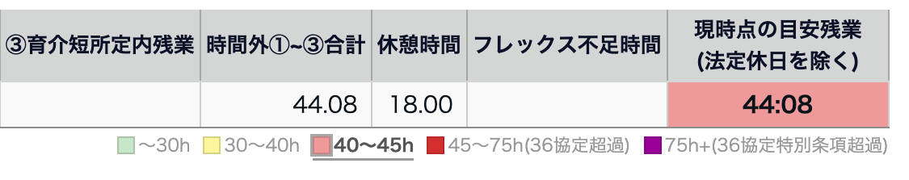
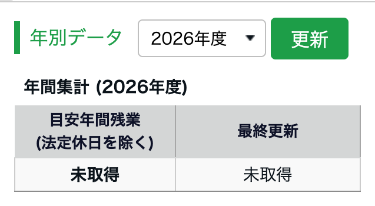
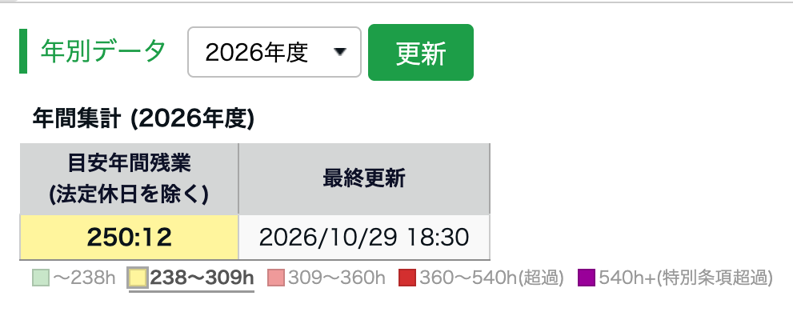
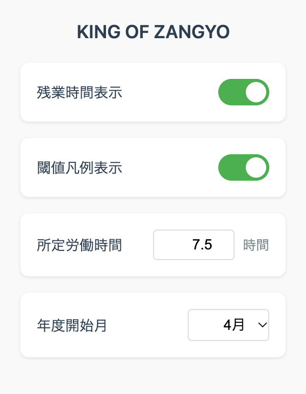

KING OF ZANGYO の使い方
KING OF TIMEのタイムカード画面に、月と年度の目安残業を足して表示する拡張です。

1何をする拡張か
タイムカード画面の「月別データ」に「現時点の目安残業（法定休日を除く）」の列を、その右に「年別データ」を足します。どちらも残業時間の多さで背景の色が変わります。
月の目安残業は、画面を開くたびに自動で計算します。当日分は、所定労働時間を超えてから反映されます。年間の目安残業は、自分で「更新」を押したときに集計します（3を参照）。

2月間の色分け

| 色 | 範囲 | 意味 |
|---|---|---|
| 緑 | 0〜30時間 | 安全範囲 |
| 黄 | 30〜40時間 | 注意 |
| 赤 | 40〜45時間 | 危険 |
| 濃赤 | 45〜75時間 | 超過（36協定） |
| 紫 | 75時間以上 | 特別条項超過 |
3年間残業時間の取り方
年間の目安残業は、一度も取得していないと「未取得」と出ます。年度ごとに、次の手順で取得します。

- 年別データの年度を選びます。いまの年度が最初から選ばれています
- 「更新」を押します
- 確認のダイアログに、取得にかかる時間の目安が出ます。OKを押します
- 画面が1か月ずつ切り替わりながら、年度の初めの月から順に集計します
- 終わると完了のダイアログが出ます。閉じると元の画面に戻り、取得した年度が表示されます

集計の途中は、画面が勝手に切り替わります。故障ではないので、完了のダイアログが出るまでそのまま待ってください。12か月分で約23秒です。

4年間の色分け
年間は、年360時間（36協定の上限）に収まるかを見て色を決めます。境目は固定ではなく、最終更新日の時点で年度があと何か月残っているかで動きます。年度の後半ほど、少ない時間で黄や赤になります。
境目の具体的な時間は、表の下の凡例に出ます。「更新」を押すたびに計算し直し、完了のダイアログでも知らせます。

| 色 | 判定 | 意味 |
|---|---|---|
| 緑 | 残りの月を月20時間ずつ使っても、年360時間まで20時間以上余る | 安全範囲 |
| 黄 | 年360時間までの残り枠が「残りの月数×20時間＋20時間」を切った | 注意（残りを月20時間以内にすれば収まる） |
| 赤 | 年360時間までの残り枠が「残りの月数×10時間」を切った | 危険（残りの月を月10時間未満にしないと超える） |
| 濃赤 | 360〜540時間 | 超過 |
| 紫 | 540時間以上 | 特別条項超過 |
年度が終わったあとに更新した年度は、緑（360時間未満）、濃赤、紫の3段階で表示します。
5設定
Chromeのツールバーにある拡張機能のアイコンを押すと、設定画面が開きます。

- 残業時間表示
- 拡張の表示をまとめてオン・オフします。
- 閾値凡例表示
- 表の下の凡例を出すかどうかを切り替えます。
- 所定労働時間
- 0.5時間刻みで設定します。最初は7.5時間です。
- 年度開始月
- 会社の年度に合わせます。最初は4月です。
6対応している勤務パターン
次の勤務も、残業時間を計算できます。法定休日は計算から除いています。
- 時間休
- 半日休暇（AM有休・PM有休）
- 管理職勤務